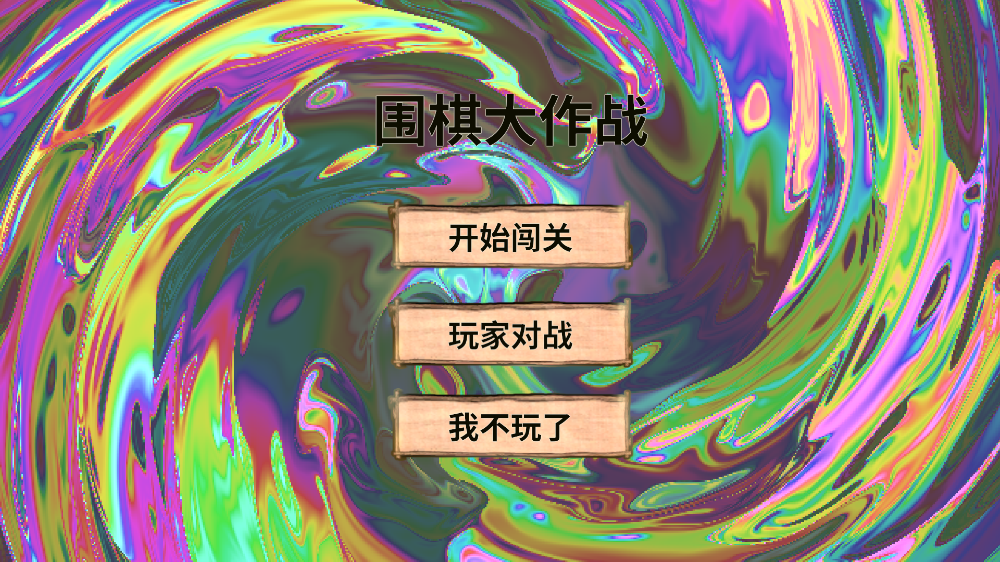
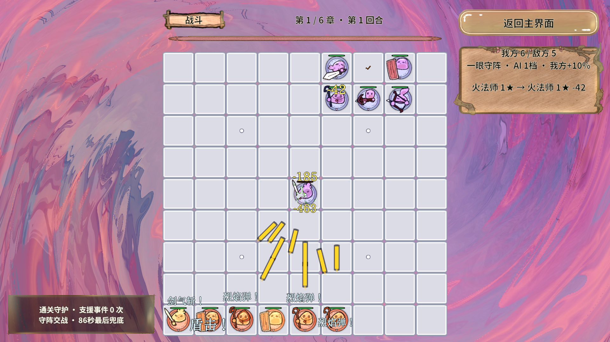
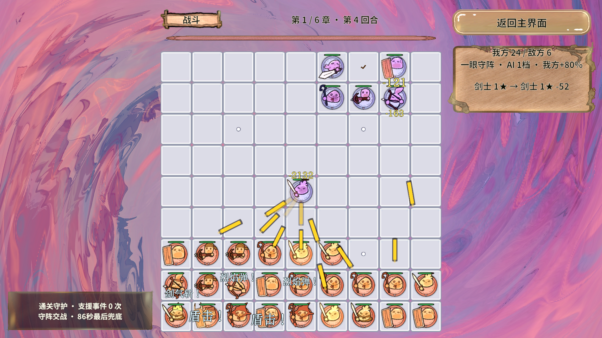
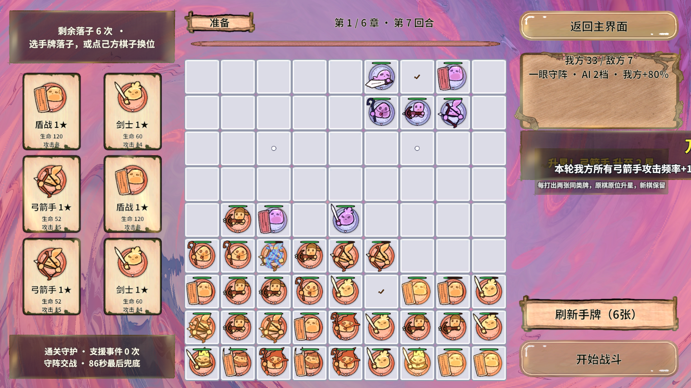
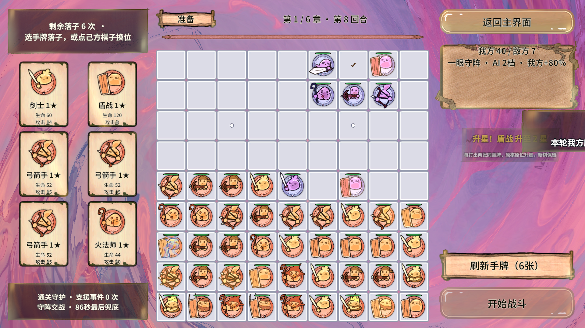
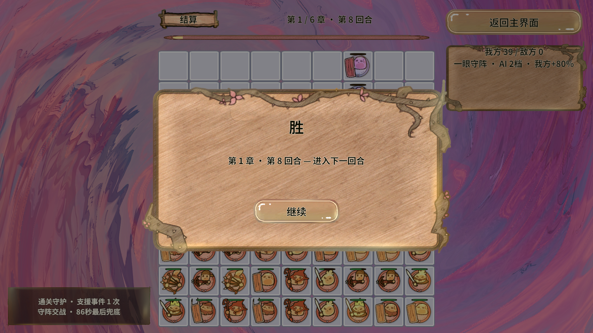
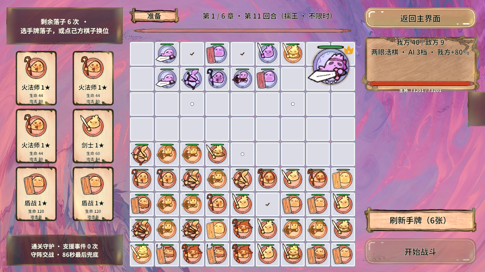
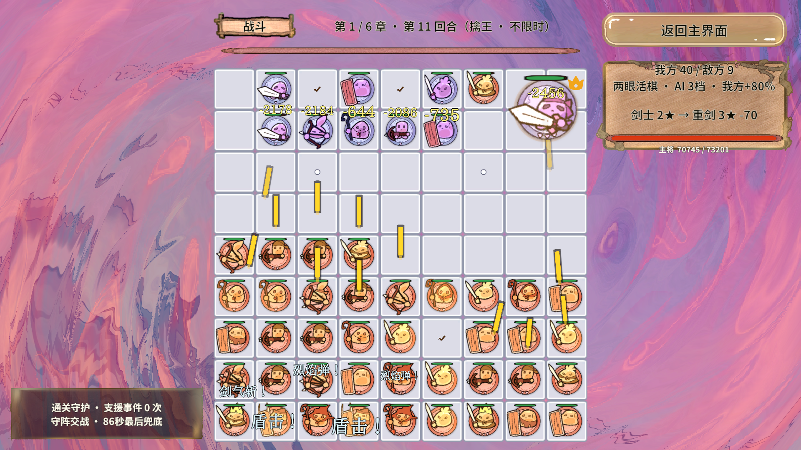
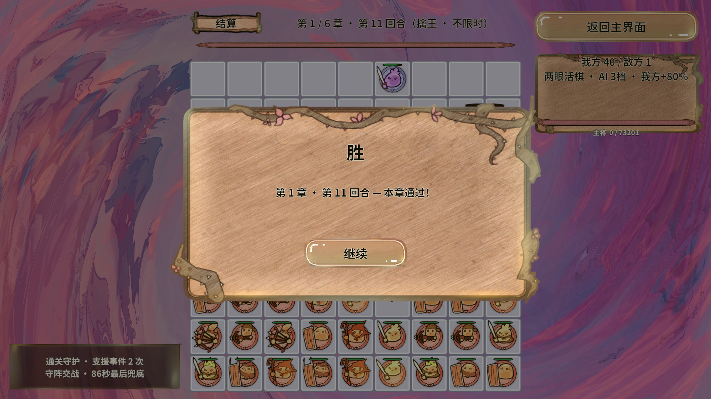
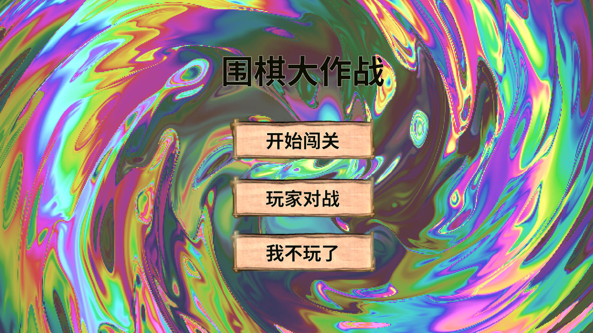

GM指令
进入Play后打开 Unity 菜单 Revolution.Tools/GM 指令面板（Ctrl+Shift+G）。七条命令由项目Bootstrap注册，人工、官方Automation及业务计划共用；本次计划实际执行了一次属性设置并核对完整JSON。
| 指令示例 | 作用 |
|---|---|
RevGame/属性设置 250 100 0 0 | 依次覆盖攻击、攻速、等效防御、最大生命四项额外百分比；重试不累计 |
RevGame/加攻击 25 | 当前额外攻击再加25个百分点 |
RevGame/加攻速 100 | 当前额外攻速再加100个百分点 |
RevGame/加防御 50 | 当前额外等效防御再加50个百分点 |
RevGame/加血量 100 | 当前额外最大生命再加100个百分点 |
RevGame/属性查询 | 返回当前四字段JSON |
RevGame/属性清除 | 四项归零；保持伤势比例，不复活死棋 |
攻击作用于真实普通攻击最终伤害，保留整数截断；攻速提高攻击进度、不改变移动冷却或整个游戏时钟。游戏暂无独立防御字段，等效防御+100%是承受正伤害÷2、最少1，护盾挡完的0保持0。生命提高上限并保留当前比例；已有棋、后落棋、援军、换轮及升星都继承，正常准备增益仍组合。
官方Automation先用 gm.list 确认运行期注册，再调用 gm.exec，payload为 {"command":"RevGame/属性设置 250 100 0 0"}。业务计划使用 op: gm 并用expected核对返回。手动设置在本次Play内保持；自动化开始采用计划配置、接管手动租约，运行中GM沿用执行器owner，完成/失败/取消/退出后清理，不恢复旧手动值。
测试条件
正式StartScene首页 → 选第一章 → 11轮真实战斗与结算 → 选章节奖励 → 第二章准备就绪 → 返回首页。前7轮各下6张真实手牌，末4轮保留6张手牌直接开战；没有强制胜利、清敌或跳关。
- 执行时间 · 北京时间
- 2026-10-22 16:29:14 — 2026-10-22 16:31:28
- 环境
- Unity 2022.3.15f1c1 · 图形Editor Play · Direct资源模式
- 本次测试强化
- 攻击额外+250%（×3.5）；攻速额外+100%（×2）
- 防御与生命
- 两项开发额外加成均为0
- 输入与GM
- 110次EventSystem指针点击；42次验证落牌；1次计划内属性GM
- 作业约束
- repeat=1 / warmup=0；failOnUnityError=true；未设性能通过门限
电脑插件初始化曾受系统1385错误阻断，本次实际采用Unity MCP控制编辑器与官方Automation作业；输入为Unity事件层模拟。截图由ScreenCapture正常帧末获取，没有OS鼠标或手机触屏覆盖。
逐轮与对照
业务passed，61/61步骤，11/11真实玩家胜利；框架success=true，requested/completed=1/1，failedIterations=0，Unity错误0，boostReleased=true。
| 轮 | 落牌 | 敌棋起始 | 模拟秒 | 我方出手 | 敌方出手 | 我方承伤HP | 敌方承伤HP | 结果 |
|---|---|---|---|---|---|---|---|---|
| 1 | 6 | 6 | 4.3750 | 102 | 1 | 9 | 5,377 | 玩家胜利 |
| 2 | 6 | 6 | 4.3750 | 212 | 2 | 0 | 14,188 | 玩家胜利 |
| 3 | 6 | 6 | 11.2500 | 773 | 17 | 183 | 63,631 | 玩家胜利 |
| 4 | 6 | 6 | 10.0000 | 818 | 14 | 213 | 83,183 | 玩家胜利 |
| 5 | 6 | 6 | 7.5000 | 795 | 12 | 195 | 84,605 | 玩家胜利 |
| 6 | 6 | 7 | 6.5625 | 1,041 | 14 | 313 | 108,629 | 玩家胜利 |
| 7 | 6 | 7 | 7.1875 | 1,145 | 17 | 449 | 110,422 | 玩家胜利 |
| 8 | 0 | 7 | 6.5625 | 987 | 13 | 359 | 112,216 | 玩家胜利 |
| 9 | 0 | 7 | 7.5000 | 1,097 | 16 | 488 | 114,008 | 玩家胜利 |
| 10 | 0 | 7 | 5.9375 | 886 | 15 | 396 | 114,298 | 玩家胜利 |
| 11·Boss | 0 | 9 | 7.8125 | 1,491 | 11 | 107 | 201,090 | 玩家胜利·擒王 |
与攻击总计150%基线对照
| 实际观测 | 150%攻击基线 | 本次攻击+250% / 攻速+100% |
|---|---|---|
| 测试倍率 | 攻击×1.5 / 攻速×1 | 攻击×3.5 / 攻速×2 |
| 框架真实耗时 | 639.76s | 133.86s |
| 敌方出手 | 1,320 | 132 |
| 我方出手 | 19,949 | 9,347 |
| 我方实际承伤HP | 16,584 | 2,712 |
| 敌方实际承伤HP | 912,122 | 1,011,647 |
| 双方有来源扣血回合 | 11/11 | 10/11 |
| 完整胜利 / 末四轮零出牌 | 11/11 · 4/4 | 11/11 · 4/4 |
| 死亡延时观察残留 | 0 / 275次 | 0 / 107次 |
我方/敌方有攻击者来源的实际承伤分别为2,712 / 1,011,647 HP；无来源伤害为0 / 0 HP。正伤害事件9,468次。双方血池、援军和治疗不同，绝对伤害比不等同胜率或平衡。
末四轮零牌
末四轮4/4通过：实际落牌0、开战手牌6、结算手牌0。EndBattle原本统一清牌，因此结算0牌不能推断为打出了手牌。轻松模式援军与已有棋子继续攻击仍属正常游戏。
| 轮 | 实际落牌 | 开战手牌 | 结算手牌 |
|---|---|---|---|
| 8 | 0 | 6 | 0 |
| 9 | 0 | 6 | 0 |
| 10 | 0 | 6 | 0 |
| 11 | 0 | 6 | 0 |
| 轮 | 我方存活起→终 | 敌方存活起→终 | 我方HP 起/上限→终 | 敌方HP 起/上限→终 |
|---|---|---|---|---|
| 1 | 6→7 | 6→0 | 596/596→727 | 4816/4816→0 |
| 2 | 13→14 | 6→0 | 1554/1563→1703 | 13617/13617→0 |
| 3 | 20→18 | 6→0 | 2368/2368→2346 | 61127/61127→0 |
| 4 | 24→23 | 6→0 | 3665/3673→3649 | 81227/81227→0 |
| 5 | 30→28 | 6→0 | 4497/4592→4495 | 82614/82614→0 |
| 6 | 34→33 | 7→0 | 5476/5578→5344 | 106605/106605→0 |
| 7 | 39→40 | 7→0 | 6282/6633→6718 | 108365/108365→0 |
| 8 | 40→39 | 7→0 | 5384/5384→5154 | 110125/110125→0 |
| 9 | 39→40 | 7→0 | 5382/5428→5419 | 111884/111884→0 |
| 10 | 40→40 | 7→0 | 5419/5516→5503 | 113646/113646→0 |
| 11 | 40→40 | 9→1 | 5503/5516→5484 | 208998/208998→10099 |
人数差不等于精确死亡数，生命起终差也不等于承伤；治疗、援军、复活、升星与生命准备增益都可能改变名单和总量。
Boss与增益
第11轮初始敌棋9、主将Id=137；模拟7.8125秒后玩家胜利，kingCaptured=true。敌方出手11次，玩家实际承伤107 HP，Boss技能事件1次。
| 轮 | 原有轻松模式 | 实际准备增益 |
|---|---|---|
| 1 | true | 万箭齐发（ArrowVolley）、慧眼共鸣（EyePower）、破阵追击（Execution）、疾风连击（Haste）、气脉畅通（Liberties）、不屈活棋（EncirclementImmunity） |
| 2 | true | 万箭齐发（ArrowVolley）、三重护盾（Shields）、远射专精（Ranged）、坚壁守护（Armor）、汲取之力（LifeSteal）、生生不息（Regeneration） |
| 3 | true | 万箭齐发（ArrowVolley）、慧眼共鸣（EyePower）、坚壁守护（Armor）、生生不息（Regeneration） |
| 4 | true | 万箭齐发（ArrowVolley）、远射专精（Ranged）、生生不息（Regeneration）、生命绽放（Vitality） |
| 5 | true | 万箭齐发（ArrowVolley）、全军奋起（Attack）、不屈活棋（EncirclementImmunity）、生命绽放（Vitality）、生生不息（Regeneration）、重弩援军（Elite） |
| 6 | true | 万箭齐发（ArrowVolley）、破阵追击（Execution）、疾风连击（Haste）、生命绽放（Vitality） |
| 7 | true | 万箭齐发（ArrowVolley）、天赋觉醒（Upgrade）、汲取之力（LifeSteal）、生命绽放（Vitality） |
| 8 | true | 万箭齐发（ArrowVolley）、复苏储备（Recovery）、生生不息（Regeneration）、天赋觉醒（Upgrade）、全军奋起（Attack）、气脉畅通（Liberties） |
| 9 | true | 万箭齐发（ArrowVolley）、天赋觉醒（Upgrade）、复苏储备（Recovery）、汲取之力（LifeSteal）、不屈活棋（EncirclementImmunity）、气脉畅通（Liberties） |
| 10 | true | 万箭齐发（ArrowVolley）、慧眼共鸣（EyePower）、气脉畅通（Liberties）、全军奋起（Attack）、汲取之力（LifeSteal）、不屈活棋（EncirclementImmunity） |
| 11 | true | 万箭齐发（ArrowVolley）、疾风连击（Haste）、远射专精（Ranged）、破阵追击（Execution）、慧眼共鸣（EyePower）、三重护盾（Shields） |
实测截图
本次独立归档38张PNG，精选10张可点击放大。正常帧末异步截图与请求记录可能相差一帧，逐轮计数以原始事件为准；图片已人工复核阶段。


正式入口首页点击放大 ↗

第1轮交战点击放大 ↗

第4轮交战点击放大 ↗

第7轮准备点击放大 ↗

第8轮零出牌准备点击放大 ↗

第8轮结算点击放大 ↗

Boss准备点击放大 ↗

Boss交战点击放大 ↗

Boss擒王结算点击放大 ↗

回到首页点击放大 ↗回归与边界
结束后实查Home / StartScene / IsTransitioning=false / IsAutomationBoostActive=false，四项GM查询均为0。CLI使用--attach；本次测试自行开启的Play已由Unity MCP停止，编辑器保持打开。
本次新会话成功作业没有失败重跑。此前基线的GM启动空表、MCP同步截图递归、结算手牌错误断言与进度文件共享冲突，保留在基线报告及附件，不混入本次成功作业。
平均帧时间
P95帧时间
最大帧时间
采样39,125帧；峰值MonoUsed 718,077,952 B，AllocatedMemory 426,684,717 B。此统计混合Editor、场景加载、战斗与截图；测试期间电脑还有HTML渲染任务，不能据此推导真机性能，也不能把两项内存计数相加当总内存。
本轮未执行正式构建、AB冷启动、手机触屏、第二章后续整章、多随机种子平衡统计、Boss九技能专项或输入遮罩专项；不承诺零GC或手机帧率。框架快照未改，正式数值和存档未改。
证据与复现
实际作业ID：28a4098289fe4a5f91f9b389400a4eca。官方Automation队列/GM → 常驻执行器 → EventSystem分帧输入 → UI/战斗事件 → RevScene异步场景交接 → owner与强化清理，已在真实业务中连通。新增GM复用原战斗公式与生命周期，未另建通信服务。
复现方式
python -X utf8 RevGame_Client/Tests/BusinessFlowAutomation/run_flow.py RevGame_Client/Tests/BusinessFlowAutomation/plans/first-chapter-2026-10-22-attack250-speed100.json --output 你的结果目录
# Unity图形编辑器已打开并编译通过，官方Automation桥启用。
# 默认从StartScene启动；已有Play需显式--attach。
# 作业中仅用正常帧末截图，勿并用同步Step式MCP截图。框架原始结果摘要
{
"name": "第一章攻击额外250%·攻速额外100%·末四轮零手牌实测",
"resultPath": "RevGame_Client\\UnityProject\\RevGame.Unity\\Library\\RevolutionAutomation\\jobs\\28a4098289fe4a5f91f9b389400a4eca\\scenario-result.json",
"startedUtc": "2026-10-22T08:29:14.5597358+00:00",
"finishedUtc": "2026-10-22T08:31:28.4329112+00:00",
"unityVersion": "2022.3.15f1c1",
"environment": "Unity Editor PlayMode",
"unityLogPath": "RevGame_Client\\UnityProject\\RevGame.Unity\\Library\\RevolutionAutomation\\jobs\\28a4098289fe4a5f91f9b389400a4eca\\unity-errors.jsonl",
"requested": 1,
"completed": 1,
"failedIterations": 0,
"warmupCompleted": 0,
"success": true,
"cancelled": false,
"elapsedSeconds": 133.8635238,
"frameSamples": 39125,
"frameMeanMs": 3.4208880611025867,
"frameP95Ms": 5.3,
"frameMaxMs": 897.846519947052,
"peakMonoUsedBytes": 718077952,
"peakAllocatedMemoryBytes": 426684717,
"unityErrors": 0,
"errors": []
}2026-10-22 · Asia/Shanghai。150%攻击基线另存，10月21日报告保留。本次未提交或推送，.codex内容不入库，保留工作区其它修改。